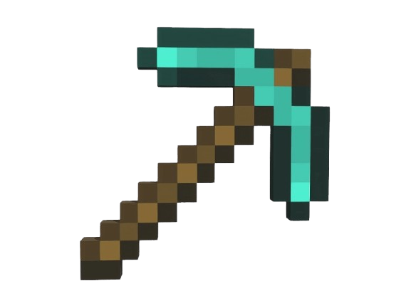

Construir
17/05/2009 - apareció en foros de desarrolladores una versión muy temprana e interactiva llamada Cave Game (que rápidamente pasó a llamarse Minecraft). Programada originalmente en Java, la idea central era combinar la exploración de cuevas con la libertad de construir bloque a bloque. La respuesta de los jugadores fue inmediata, impulsando la creación del estudio Mojang en Estocolmo para llevar el proyecto hasta su versión oficial 1.0, lanzada el 18 de noviembre de 2011

El juego fue diseñado como una caja de arena (sandbox) de libertad total. Sin misiones obligatorias ni historias predeterminadas, el mapa se genera de forma procedural e infinita. Su icónica estética de cubos tridimensionales pixelados permitió enfocar los recursos técnicos en el rendimiento y la modificación del entorno en tiempo real. Toda la experiencia gira en torno a minar recursos y crear objetos o construcciones, dando total autonomía al jugador
Record histórico: Es el videojuego más vendido de todos los tiempos, superando las 300 millones de copias.
Base de jugadores: Supera los 140 millones de usuarios activos mensuales.